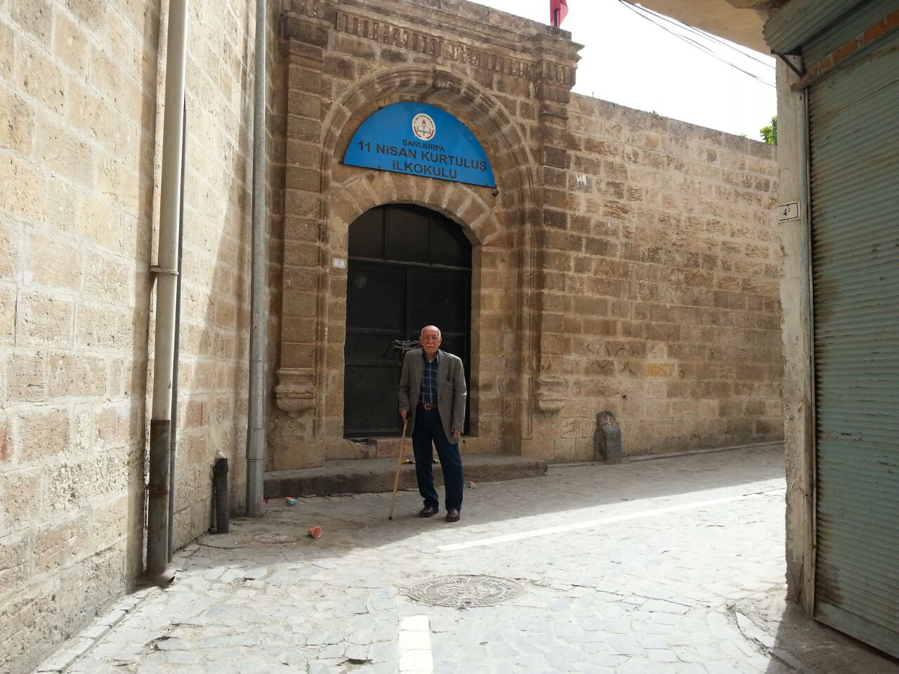
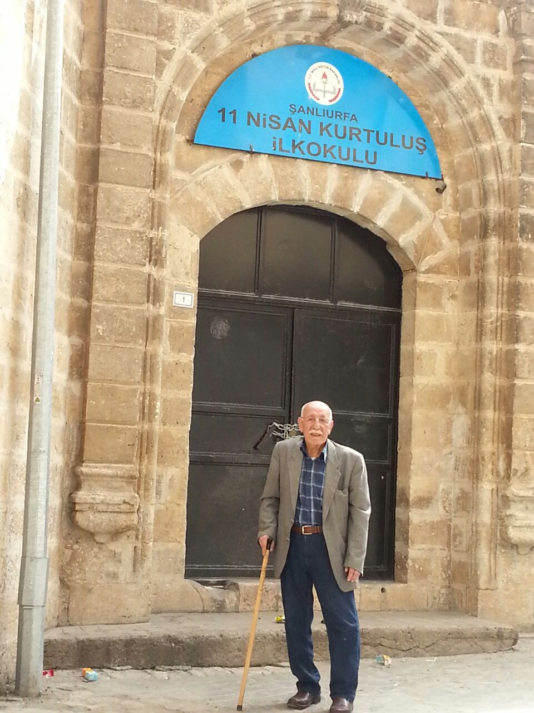
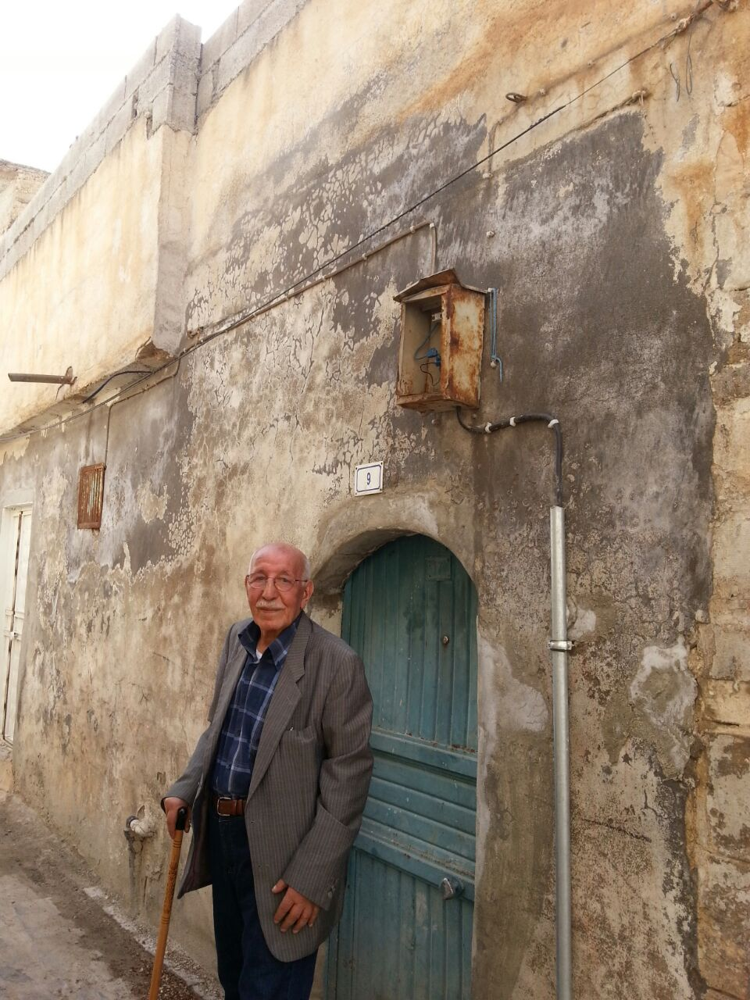

11 Nisan Kurtuluş İlkokulu¶
O sıralarda İkinci Dünya Savaşı çıkmıştı. O yıl ilkokula 11 Nisan Kurtuluş İlkokulu'na başladım. (yıl 1940). Abdülgani abimin soyadı Eren’di. Müdür bey soyadı yerine Eren yazı ve 5 yıl o okulda okudum. (yıl 1945). Abdülgani abim gibi ben de çalışkan bir öğrenci oldum. Daha birinci sınıfta okuma yazmayı öğrendim.
{kind=link}

{kind=link}

Biraz geriye gidelim: 1938’li yıllara. O büyük evde Naciye ablam İhsanı doğurdu. O yıllarda Ahlat’tan teyzem oğlu Yusuf bize orta okulu okumaya gelmişti.
Evimiz çok kalabalıklaşmıştı. Hayriye halam ve çocukları Ağrının Girekol köyünden gelmişlerdi. O köyün ismi şimdi değişmiştir. Daha sonra Ağrı'ya gittiler. Fatma isimli kızı Ağrı'da vefat etmiş. Biz o evden Saliha ablamın kocası Hamza ve kardeşi bir ev satın almışlardı, o eve taşındık. İlkokula o evde başladım. Daha önce okula başladığımı anlatmıştım. 5 yıl o evde kaldık Saliha ablam hastalandı verem olduğunu öğrendim. Çok güzel insandı. Orada öldü. Tahminen 20 yaşlarında idi. Bizim aileden verem hastalığından vefat eden 3.cü kişiydi. Önce annem, sonra amcamın eşi Cemile daha sonrada Saliha ablam. O evde Naciye ablamın Fatma'sı 1943 te şimdi İzmir'de olan kızı Naime dünyaya geldi (yıl 1941).
Bizim oturduğumuz mahalle zengin ağaların oturduğu bir mahalleydi. Ekmekler karne ile veriliyordu. Bizim evde bol miktarda buğday vardı. O buğdayları nenemin çeyiz sandığında ve yerleri kazıp saklıyorduk. Çünkü evlerimizi arıyorlardı. Devlet buğdayları Almanya'ya gönderiyordu. Almanlar ise bizi savaşa sokmaya çalışıyorlardı. Devletimizde al sana yemek bizi savaşa sokma diyordu. Rahmetli İnönü o zaman Cumhurbaşkanı idi. Daha sonraki yıllarda şu sözü söyledi: “Ben sizi aç bıraktım ama yetim bırakmadım”.
İlkokul 5’e geçtiğim o yıl o evden de 1 sene oturduğumuz Kelleci Kamil'in evine taşındık.
Ondan sonra da Adilcevazlı Hamza adında bir hemşehrimizin evine taşındık.
{kind=link}

Bu Hamza ile kirve olduk. Onun oğlunun sünnetini üstlendik. Kirve demek şimdiki dilde sponsor demek. Sünnet olacak çocuğu kirve kucağına alır ve sünnetçi çocuğu sünnet eder. O evde ilkokul bitti.